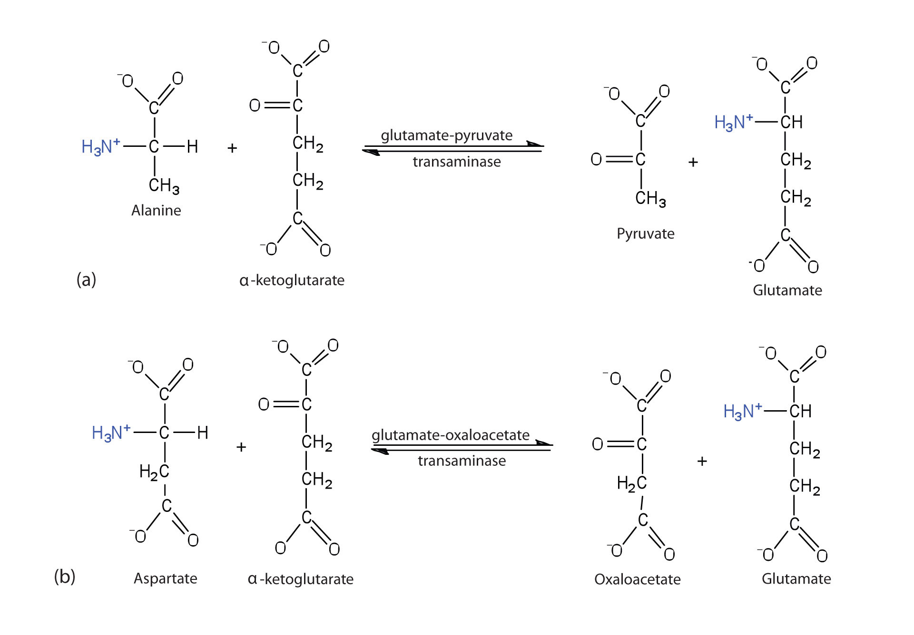
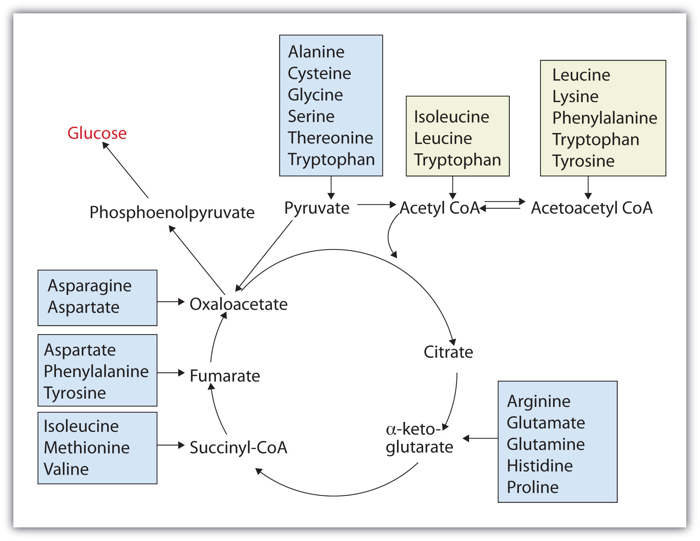

The liver is the principal site of amino acid metabolism, but other tissues, such as the kidney, the small intestine, muscles, and adipose tissue, take part. Generally, the first step in the breakdown of amino acids is the separation of the amino group from the carbon skeleton, usually by a transamination reaction. The carbon skeletons resulting from the deaminated amino acids are used to form either glucose or fats, or they are converted to a metabolic intermediate that can be oxidized by the citric acid cycle. The latter alternative, amino acid catabolism, is more likely to occur when glucose levels are low—for example, when a person is fasting or starving.
TransaminationAn exchange of functional groups between any amino acid and an α-keto acid. is an exchange of functional groups between any amino acid (except lysine, proline, and threonine) and an α-keto acid. The amino group is usually transferred to the keto carbon atom of pyruvate, oxaloacetate, or α-ketoglutarate, converting the α-keto acid to alanine, aspartate, or glutamate, respectively. Transamination reactions are catalyzed by specific transaminases (also called aminotransferases), which require pyridoxal phosphate as a coenzyme. (For more information about coenzymes, see Chapter 18 "Amino Acids, Proteins, and Enzymes", Section 18.9 "Enzyme Cofactors and Vitamins".)
Alanine and aspartate then undergo a second transamination reaction, transferring their amino groups to α-ketoglutarate and forming glutamate (Figure 20.19 "Two Transamination Reactions").
In an α-keto acid, the carbonyl or keto group is located on the carbon atom adjacent to the carboxyl group of the acid. (For more information about acid carboxyl groups, see Chapter 15 "Organic Acids and Bases and Some of Their Derivatives", Section 15.2 "Carboxylic Acids: Structures and Names".)
Figure 20.19 Two Transamination Reactions
In both reactions, the final acceptor of the amino group is α-ketoglutarate, and the final product is glutamate.
In the breakdown of amino acids for energy, the final acceptor of the α-amino group is α-ketoglutarate, forming glutamate. Glutamate can then undergo oxidative deaminationA reaction in which glutamate loses its amino group as an ammonium ion and is oxidized back to α-ketoglutarate., in which it loses its amino group as an ammonium (NH4+) ion and is oxidized back to α-ketoglutarate (ready to accept another amino group):
This reaction occurs primarily in liver mitochondria. Most of the NH4+ ion formed by oxidative deamination of glutamate is converted to urea and excreted in the urine in a series of reactions known as the urea cycle.
The synthesis of glutamate occurs in animal cells by reversing the reaction catalyzed by glutamate dehydrogenase. For this reaction nicotinamide adenine dinucleotide phosphate (NADPH) acts as the reducing agent. The synthesis of glutamate is significant because it is one of the few reactions in animals that can incorporate inorganic nitrogen (NH4+) into an α-keto acid to form an amino acid. The amino group can then be passed on through transamination reactions, to produce other amino acids from the appropriate α-keto acids.
Any amino acid can be converted into an intermediate of the citric acid cycle. Once the amino group is removed, usually by transamination, the α-keto acid that remains is catabolized by a pathway unique to that acid and consisting of one or more reactions. For example, phenylalanine undergoes a series of six reactions before it splits into fumarate and acetoacetate. Fumarate is an intermediate in the citric acid cycle, while acetoacetate must be converted to acetoacetyl-coenzyme A (CoA) and then to acetyl-CoA before it enters the citric acid cycle.
Those amino acids that can form any of the intermediates of carbohydrate metabolism can subsequently be converted to glucose via a metabolic pathway known as gluconeogenesis. These amino acids are called glucogenic amino acidsAn amino acid that can form any of the intermediates of carbohydrate metabolism and subsequently be converted to glucose.. Amino acids that are converted to acetoacetyl-CoA or acetyl-CoA, which can be used for the synthesis of ketone bodies but not glucose, are called ketogenic amino acidsAn amino acid that is converted to acetoacetyl-CoA or acetyl-CoA, which can be used for the synthesis of ketone bodies but not glucose.. Some amino acids fall into both categories. Leucine and lysine are the only amino acids that are exclusively ketogenic. Figure 20.20 "Fates of the Carbon Skeletons of Amino Acids" summarizes the ultimate fates of the carbon skeletons of the 20 amino acids.
Figure 20.20 Fates of the Carbon Skeletons of Amino Acids
An exercise physiologist works with individuals who have or wish to prevent developing a wide variety of chronic diseases, such as diabetes, in which exercise has been shown to be beneficial. Each individual must be referred by a licensed physician. An exercise physiologist works in a variety of settings, such as a hospital or in a wellness program at a commercial business, to design and monitor individual exercise plans. A registered clinical exercise physiologist must have an undergraduate degree in exercise physiology or a related degree. Some job opportunities require a master’s degree in exercise physiology or a related degree.
What is the purpose of oxidative deamination?
Oxidative deamination provides a reaction in which the amino group [as the ammonium (NH4+) ion] is removed from a molecule, not simply transferred from one molecule to another. Most of the NH4+ ion is converted to urea and excreted from the body.
Write the equation for the transamination reaction between valine and pyruvate.
Write the equation for the transamination reaction between phenylalanine and oxaloacetate.
What products are formed in the oxidative deamination of glutamate?
Determine if each amino acid is glucogenic, ketogenic, or both.
Determine if each amino acid is glucogenic, ketogenic, or both.
α-ketoglutarate, NADH, and NH4+